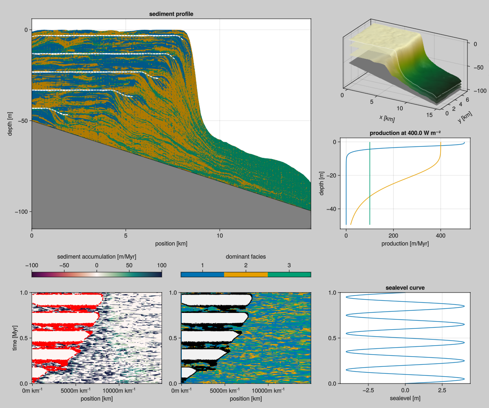

CarboKitten.jl: Modeling Carbonate Platforms in Julia
About
CarboKitten is a reimplementation of Peter Burgess' CarboCAT, a model for generating carbonate platform stratigraphies. CarboKitten is a three-dimensional model, having two spatial dimensions and one for stored stediment.
Features:
- Cellular Automata to regulate facies type
- Advection-diffusion based sediment transport

CarboKitten is written in Julia for performance and extensibility.
Julia Quickstarter
This code is written in Julia. You may want to check out the following references:
There are several ways to work with Julia that may be a bit different from what you're used to, if that is Matlab, Python or R.
Installing Julia
The best way to install Julia is to use juliaup at github.com/JuliaLang/juliaup.
REPL
The most basic way to work in Julia, is to start the REPL (Read Eval Print Loop).
$ julia
_
_ _ _(_)_ | Documentation: https://docs.julialang.org
(_) | (_) (_) |
_ _ _| |_ __ _ | Type "?" for help, "]?" for Pkg help.
| | | | | | |/ _` | |
| | |_| | | | (_| | | Version 1.9.3 (2023-08-24)
_/ |\__'_|_|_|\__'_| | Official https://julialang.org/ release
|__/ |
julia>From here you may use CarboKitten using CarboKitten and run any of the code inside. To work with CarboKitten efficiently, you may want to load Revise. Revise auto-detects changes to loaded code and makes it easy to rerun.
Running CarboKitten will require to load other dependencies, so please consult the documentation on Julia packages to learn how.
VS Code
VSCode has very good support for working with Julia. Install the official Julia plugin and you should be good to go. Explore options by pressing Ctrl+Shift+P and type Julia to see what you can do. For example: start a REPL, run current script etc.
Jupyter
You can run Julia code from Jupyter if you install the Julia kernel. Press ] in the REPL to get into Pkg-mode, the prompt will change
(CarboKitten) pkg>You may install the IJulia kernel with add IJulia.
Pluto
An alternative (and in our opinion superior) notebook interface is called Pluto.
- Pluto is reactive: changes to code cells automatically update downstream dependencies.
- Pluto notebooks are written to regular Julia files and can (though maybe shouldn't) be run independent from Pluto.
- The user interface of Pluto is slightly less mature than Jupyter
In Pkg-mode say add Pluto.
julia> using Pluto
julia> Pluto.run()
[ Info: Loading...
┌ Info:
└ Opening http://localhost:1234/?secret=xyzxyzzy in your default browser... ~ have fun!
┌ Info:
│ Press Ctrl+C in this terminal to stop Pluto
└Plotting
CarboKitten ships with several routines for visualizing model output. These routines use the Makie.jl package. Makie has three back-ends: CairoMakie, GLMakie and WGLMakie. These are all written in Julia, but they focus on different kinds of results. CairoMakie is relatively slow but results in publication quality vector graphics: SVG or PDF. GLMakie is very fast, renders on your graphics card, but only produces raster images, say PNG. Then WGLMakie does a similar thing, but through the web-browser.
Design style
Input structures
Input datastructures are always @kwdef. This makes it easier to understand and modify simulation scripts.
Different components of CarboKitten can work a variety of input types, as long as their expected data members are present. TODO: systematically document type requirements for each component.
Output data
All output is written to HDF5 files. Optionally, you may export parts of the output data to CSV files for further analysis.
Partial functions
Most of the model code is written in the following particular pattern:
function component(input)
prepare(input)
return function(state)
iterate!(state)
end
endIn this case the prepare() statement is run once at the beginning of a model run, while the iterate!(state) statement, possibly modifying the state variable, is being run every iteration.
Entangled
If you plan to make a contribution to the core of CarboKitten, you should be aware of Entangled.
The documentation for CarboKitten is using Entangled for Literate Programming. This means that code blocks in the documentation contribute to the actual functioning code in the library. When you develop the library code, you should have the Entangled daemon running to keep the documentation synchronized. Included in the CarboKitten repository is a pyproject.toml that manages the Entangled installation for you through Poetry; alternatively, you may install Entangled through pip install entangled-cli.
To install, run poetry install in the project root, then:
poetry run entangled watchEntangled is still under development and it may occur that the daemon complains about not knowing wether to tangle or stitch, for example when you've accidentally written both markdown and source code. If this happens you may manually entangled tangle or entangled stitch with the --force argument to decide the issue. It may be worth saving your work in version control before doing so.
A somewhat frequent occurence is that you forgot to run entangled watch while developing. In this case, commit the work you have done to git, then run entangled tangle or entangled stitch (whichever applies). Your files are now back in their old state, but you can git restore the edits you have made and run entangled sync again to propagate the changes. The project should be in a good state again.
Building Documentation
To recreate the plots in the documentation run
poetry run brei figuresThe documentation can be rendered with Documenter.jl.
julia --workenv=docs docs/make.jlProject structure
.
├── data # data files
├── docs # documentation
│ ├── make.jl # docs build script
│ ├── Manifest.toml #
│ ├── Project.toml # dependencies for building docs
│ └── src # markdown source for docs
├── entangled.toml # entangled config
├── examples # example scripts
├── Makefile # command-line short hands
├── Manifest.toml #
├── Project.toml # project dependencies
├── pyproject.toml # dependencies for running Entangled
├── README.md #
├── src # tangled library source
└── test # unit testsThe figures from the documentation in "docs/src/fig" are git tracked, but are often regenerated when you change some of their direct dependencies. This makes switching branches harder, it would require issuing "git stash" first. We have made sure that the regenerated figures appear in docs/src/_fig and are not git tracked. There is a task in pyproject.toml that takes care of copying from docs/src/_fig to docs/src/fig when this repo is cloned:
poetry run brei copy_figuresAuthors
Lead engineer: Johan Hidding Netherlands eScience Center email: j.hidding [at] esciencecenter.nl Web page: www.esciencecenter.nl/team/johan-hidding-msc/ ORCID: 0000-0002-7550-1796
Denudation modelling: Xianyi Liu Utrecht University email: x.liu6 [at] uu.nl Web page: www.uu.nl/staff/XLiu6 ORCID:
Original CarboCAT author: Peter Burgess University of Liverpool Web page: www.liverpool.ac.uk/environmental-sciences/staff/peter-burgess
Project lead: Emilia Jarochowska Utrecht University email: e.b.jarochowska [at] uu.nl Web page: www.uu.nl/staff/EBJarochowska ORCID: 0000-0001-8937-9405
Other team members:
Niklas Hohmann Utrecht University email: n.h.hohmann [at] uu.nl Web page: www.uu.nl/staff/NHohmann ORCID: 0000-0003-1559-1838
Hanno Spreeuw Netherlands eScience Center email: h.spreeuw [at] esciencecenter.nl Web page: www.esciencecenter.nl/team/dr-hanno-spreeuw/ ORCID: 0000-0002-5057-0322
David De Vleeschouwer Westfälische Wilhelms-Universität Münster Web page: www.uni-muenster.de/GeoPalaeontologie/erdsystemforschung/staff/DeVleeschouwer ORCID: 0000-0002-3323-807X
Copyright
Copyright 2023 Netherlands eScience Center and Utrecht University
License
This program is free software: you can redistribute it and/or modify it under the terms of the GNU General Public License as published by the Free Software Foundation, either version 3 of the License, or (at your option) any later version.
This program is distributed in the hope that it will be useful, but WITHOUT ANY WARRANTY; without even the implied warranty of MERCHANTABILITY or FITNESS FOR A PARTICULAR PURPOSE. See the GNU General Public License for more details.
You should have received a copy of the GNU General Public License along with this program. If not, see https://www.gnu.org/licenses/.
Funding information
Funded by the European Union (ERC, MindTheGap, StG project no 101041077). Views and opinions expressed are however those of the author(s) only and do not necessarily reflect those of the European Union or the European Research Council. Neither the European Union nor the granting authority can be held responsible for them.